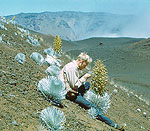
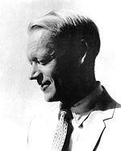
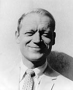
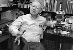
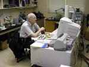

|
 |

Sherwin Carlquist in the field.
{kind=link}

Sherwin Carlquist ~ 1957
{kind=link}

Sherwin Carlquist ~ 1957
{kind=link}
{kind=link}

Sherwin Carlquist in the lab.
{kind=link}

Sherwin Carlquist at the scanning electron microscope.
{kind=link}
BIOGRAPHY AND PUBLICATIONS
Sherwin Carlquist: Born: July 7, 1930
Academic experience: B.A., University of California, Berkeley, 1952; Ph.D., University of California, Berkeley, 1956. Postdoctoral study, Harvard University, 1955-56 (three NSF fellowships during graduate and postdoctoral years).
Positions held: Assistant Professor of Botany, Claremont Graduate School, 1956-1961; Associate Professor, 1961-1967; Professor, 1967-1992. Position funded jointly by Claremont Graduate School and Pomona College, 1977-1984 (title of Professor of Biology also held at Pomona College during that period). Position funded jointly by Rancho Santa Ana Botanic Garden and Pomona College, 1984-1992 (during which time the title of Plant Anatomist was held at Rancho Santa Ana Botanic Garden, and the titles as Professor were retained at Claremont Graduate School and Pomona College). Adjunct Professor of Biological Sciences, University of California at Santa Barbara, 1993-1998.
Grants received: Eight research grants from National Science Foundation, 1962-1988. John Simon Guggenheim Fellow, 1973. Japan Society for the Promotion of Science Fellow, 1982. Smaller grants from American Chemical Society, Chevron Research Corporation, American Philosophical Society (2), and National Geographic Society (2).
Awards: Other than academic honors (including Phi Beta Kappa and Sigma Xi): Gleason Prize of the New York Botanical Garden (best contribution to biogeography) for Island Life, 1967; career award (Certificate of Merit), Botanical Society of America, 1977; Fellow, International Academy of Wood Science, 1987. Allerton Medal of the National Tropical Botanical Garden, 1992. Asa Gray Award, American Society of Plant Taxonomists, 1993. Career Award, Santa Barbara Botanic Garden, 1996. Fellows' Medal, California Academy of Sciences, 1996. Margaret T. Getman Teaching Award, University of California at Santa Barbara, 1996. José Cuatrecasas Medal in Botany, Smithsonian Institution, 2006. Half-day symposium honoring the scientific work, “Using anatomy to vascularize tropical botany, ecology, and systematics: the contributions of Sherwin Carlquist to the botanical sciences,” presented at the Chicago meetings of the Botanical Society of America, 2007.
Invited lectures: University of Alberta (s), U. California (Berkeley), U. C. (Davis), U. C. (Riverside), U. C. (Santa Barbara), Colorado State University, Cornell University (s), Duke University, Harvard University, Indiana University (s), University of Florida (s), University of Maryland, Miami University (Ohio), University of Missouri (s), University of Nebraska (s), University of North Carolina, North Carolina State University, Ohio State University (s) Ohio University (s), Utah State University, Whitman College (s), University of Wisconsin (s), Yale University. At institutions followed by (s), a lecture series or endowed lectures were given. Visiting Distinguished Professor of Botany, University of Florida, May-June, 1980.
Symposia: International Botanical Congress, Montreal; International Botanical Congress, Seattle; Pacific Science Congress, Honolulu (1961); Symposium on Insular Biology, Mayaguez, Puerto Rico (1969); Symposium on Plant Dispersal, Hamburg (1981); Symposium on Ecological Wood Anatomy, AIBS (1985); Symposium on Phylogeny of the Asteridae, AIBS (1991); Pacific Woods Symposium of IAWA at NTBG, Kauai, (1992); Symposium on the Ranunculiflorae, University of Bayreuth (1994); Symposium on Phylogeny and Relationships of Gnetales, AIBS (1995); Symposium on Preserving Biodiversity, BSA meetings (2007).
Courses taught: Plant anatomy; Comparative plant anatomy; Morphology of pteridophytes and gymnosperms; morphology of algae, fungi, and bryophytes; Plant microtechnique; Principles of evolution; Pacific basin biogeography; Plant taxonomy; Palynology; scanning electron microscopy course; Island Biology; graduate seminars; portions of an elementary biology course; Botanical German reading course; Freshman seminar; various tutorial courses.
Field work:
1953, Revillagigedo Islands
Hawaiian Islands: 1953, 1958, 1961, 1965, 1966, 1972, 1974, 1976,
1985.
1957: Guadalupe I., Mexico (1 week)
1962-1963: 15 months in S. Pacific and Orient, including Society
Islands, Samoa, Fiji, New Caledonia, New Hebrides, New Guinea, New Zealand,
Australia, Cambodia, Taiwan, Japan.
1973: Malaya (3 weeks); South Africa (5 months)
1974: Western Australia (including desert center) (4 months)
1976: Southeastern U.S. (1 month)
1977: study in Herbarium of the Royal Botanic Garden, Kew, and Herbarium,
Mus‚e d'Histoire Naturelle, Paris; Field work in Malaya, Northern
Territory, Queensland, New Caledonia, and Fiji.
1978: helicopter-aided reconnaissance of the Arnhem
Land sandstone plateau, Northern Territory; field work in New Caledonia
(including climb of Mt. Panié); Sabah (Mt. Kinabalu).
1980: southern Florida, especially Everglades and Keys
1981: botanical gardens and natural areas in Germany, Sweden, and
Denmark.
1982: Japan (3 months), including 3 Ryukyu Islands, 3 Bonin Islands,
plus various montane areas on Honshu and Kyushu; Peru and Chile (3 months).
1984: Texas, Colorado, New Mexico, Arizona
1988: Sonora, Mexico
1989: Namibia, Malaysia, subantarctic islands of New Zealand
About Sherwin Carlquist: Wagner, Warren L. 1994. Sherwin Carlquist--Recipient of the 1993 Asa Gray Award. Syst. Bot. 19:1-5.
Books:
1961. Comparative Plant Anatomy. Holt, Rinehart & Winston, New York. ix + 146 p.
1965. Island Life. A Natural History of the Islands of the World. Natural History Press, New York. xii + 455 p.
1965. Japanese Festivals (with Helen Bauer). Doubleday & Co., New York. 224 p. (reprinted, 1974, Charles E. Tuttle & Co., Tokyo. 231 p.).
1970. Hawaii. A Natural History. Natural History Press, New York. ix + 463 p. (second edition, 1980, by Pacific Tropical Botanical Garden, Hawaii, ix + 468 p.)
1974. Island Biology. Columbia University Press, New York & London. xii + 660 p.
1975. Ecological Strategies of Xylem Evolution. University of California Press, Berkeley & London. x + 243 p. + index + 15 pls.
1988. Comparative Wood Anatomy. Springer Verlag, Berlin and Heidelberg.
x + 436 p. (second edition, 2001. Springer Verlag, Berlin and Heidelberg,
x + 448 p.)
2003. Tarweeds and Silverswords: Evolution of the Madiinae
(Asteraceae). Edited by S. Carlquist, Bruce G. Baldwin, and Gerald
D. Carr. Missouri Botanical Garden Press. 293 p.
Papers (shorter articles, popular articles, reviews, abstracts, etc. omitted from this listing):
Most of these papers are optically searchable (OCR). That means that within the Portable Document Format (PDF) for any particular papers, you can search for particular terms, phenomena, names, etc, and locate mentions of them throughout a given paper. In order to do this, open the documents in the reader of your choice (i.e. Adobe Acrobat) and find that reader's search function.
PDFs are available for nearly all of the papers listed below, as indicated by the [ PDF ] at the end of each citation for which a PDF is available. PDFs may be copied from the site by downloading the particular document to your computer.
PDFs of about 300 papers are now available on this site. PDFs have not been included for papers that have been superseded or that have illustrations that have since been bettered.
1956. On the occurrence of intercellular pectic warts in Compositae. Amer. Jour. Bot. 43:425-429.[ — PDF may be available at these external sources: DOI, Wikidata. ]
1956. On the generic limits of Eriophyllum (Compositae) and allied genera. Madroño 13:226-239.[ — PDF may be available at these external sources: jstor.org, Wikidata. ]
1957. Wood anatomy of Mutisieae (Compositae). Trop. Woods 106:29-45.[ — PDF may be available at these external sources: Wikidata. ]
1957. Systematic anatomy of Hesperomannia. Pacific Sci. 11:207-215.[ — PDF may be available at these external sources: Wikidata. ]
1957. Anatomy of Guayana Mutisieae. Mem. N. Y. Bot. Gard. 9:441-476.[ — PDF may be available at these external sources: biodiversitylibrary.org, Wikidata. ]
1957. The genus Fitchia (Compositae). Univ. California Publ. Bot. 29:1-144.
1957. Leaf anatomy and ontogeny in Argyroxiphium and Wilkesia (Compositae). Amer. Jour. Bot. 44:696-705. [ — PDF may be available at these external sources: DOI, Wikidata. ]
1958. Wood anatomy of Heliantheae (Compositae). Trop. Woods 108:1-30.[ — PDF may be available at these external sources: Wikidata. ]
1958. Anatomy and systematic position of Centaurodendron and Yunquea (Compositae). Brittonia 10:78-93.[ — PDF may be available at these external sources: DOI, jstor.org, Wikidata. ]
1958. Anatomy of Guayana Mutisieae. Part II. Mem. N. Y. Bot. Gard. 10:157-184.[ PDF ]
1958. The woods and flora of the Florida Keys. Compositae. Trop. Woods 109:1-37.
1958. Structure and ontogeny of glandular trichomes of Madinae (Compositae). Amer. Jour. Bot. 45:675-682. [ — PDF may be available at these external sources: DOI, Wikidata. ]
1959. The leaf of Calycadenia and its glandular appendages. Amer. Jour. Bot. 46:70-80. [ — PDF may be available at these external sources: DOI, Wikidata. ]
1959. Glandular structures of Holocarpha and their ontogeny. Amer. Jour. Bot. 46:300-308. [ — PDF may be available at these external sources: DOI, Wikidata. ]
1959. Studies on Madinae: anatomy, cytology, and evolutionary relationships. Aliso 4:171-236. [ — PDF may be available at these external sources: DOI, scholarship.claremont.edu, Wikidata. ]
1959. Vegetative anatomy of Dubautia. Argyroxiphium, and Wilkesia (Compositae). Pacific Sci. 13:195-210. [ — PDF may be available at these external sources: Wikidata. ]
1959. Wood anatomy of Helenieae (Compositae). Trop. Woods 111:19-39.[ PDF ]
1960. Anatomy of Guayana Xyridaceae: Abolboda, Orectanthe, and Achlyphila. Mem. N. Y. Bot. Gard. 10:65-117.[ — PDF may be available at these external sources: biodiversitylibrary.org, Wikidata. ]
1960. Wood anatomy of Cichorieae (Compositae). Trop. Woods 112:65-91.[ — PDF may be available at these external sources: Wikidata. ]
1960. Wood anatomy of Astereae (Compositae). Trop. Woods 113:54-84.[ — PDF may be available at these external sources: Wikidata. ]
1961. Wood anatomy of Inuleae (Compositae). Aliso 5:21-37.[ — PDF may be available at these external sources: DOI, scholarship.claremont.edu, Wikidata. ]
1961. Pollen morphology of Rapateaceae. Aliso 5:39-66.[ — PDF may be available at these external sources: DOI, scholarship.claremont.edu, Wikidata. ]
1962. Trematolobelia: seed dispersal; anatomy of fruit and seeds. Pacific Sci. 16:126-134.[ — PDF may be available at these external sources: Wikidata. ]
1962. A theory of paedomorphosis in dicotyledonous woods. Phytomorphology 12:30-45. [ — PDF may be available at these external sources: Wikidata. ]
1962. Wood anatomy of Senecioneae (Compositae). Aliso 5:123-146.[ — PDF may be available at these external sources: DOI, scholarship.claremont.edu, Wikidata. ]
1962. Ontogeny and comparative anatomy of thorns of Hawaiian Lobeliaceae. Amer. Jour. Bot. 49:413-419.[ — PDF may be available at these external sources: DOI, Wikidata. ]
1963. Studies in Fitchia (Compositae): novelties from the Society Islands; anatomical studies. Pacific Sci. 17:282-298 (with Martin L. Grant).[ — PDF may be available at these external sources: Wikidata. ]
1964. Morphology and relationships of Lactoridaceae. Aliso 5:421-435.[ — PDF may be available at these external sources: DOI, scholarship.claremont.edu, Wikidata. ]
1964. Leaf anatomy as an indicator of Salvia apiana--mellifera introgression. Aliso 5:437-449 (with Alice-Ann Webb). [ — PDF may be available at these external sources: DOI, scholarship.claremont.edu, Wikidata. ]
1964. Wood anatomy of Vernonieae (Compositae). Aliso 5:451-467.[ — PDF may be available at these external sources: DOI, scholarship.claremont.edu, Wikidata. ]
1964. Pollen morphology and evolution of Sarcolaenaceae (Chlaenaceae). Brittonia 16:231-254. [ — PDF may be available at these external sources: DOI, jstor.org, Wikidata. ]
1965. Wood anatomy of Cynareae (Compositae). Aliso 6(1):13-24.[ — PDF may be available at these external sources: DOI, scholarship.claremont.edu, Wikidata. ]
1965. Wood anatomy of Eupatorieae (Compositae). Aliso 6(1):89-103.[ — PDF may be available at these external sources: DOI, scholarship.claremont.edu, Wikidata. ]
1966. The systematics and anatomy of Gongylocarpus (Onagraceae). Amer. Jour. Bot. 53:378-390 (with Peter H. Raven).[ — PDF may be available at these external sources: DOI, Wikidata. ]
1966. Anatomy of Rapateaceae. Roots and stems. Phytomorphology 16:17-38.[ — PDF may be available at these external sources: Wikidata. ]
1966. The biota of long-distance dispersal. I. Principles of dispersal and evolution. Quart. Rev. Biol. 41:247-270.[ — PDF may be available at these external sources: DOI, jstor.org, Wikidata. ]
1966. The biota of long-distance dispersal. II. Loss of dispersibility in Pacific Compositae. Evolution 20:30-48. [ — PDF may be available at these external sources: DOI, Wikidata. ]
1966. The biota of long-distance dispersal. III. Loss of dispersibility in the Hawaiian flora. Brittonia 18:310-335. [ — PDF may be available at these external sources: DOI, jstor.org, Wikidata. ]
1966. The biota of long-distance dispersal. IV. Genetic systems in the floras of oceanic islands. Evolution 20:433-455. [ — PDF may be available at these external sources: DOI, Wikidata. ]
1966. Wood anatomy of Anthemideae, Ambrosieae, Calenduleae, and Arctotideae (Compositae). Aliso 6(2):1-23.[ — PDF may be available at these external sources: DOI, scholarship.claremont.edu, Wikidata. ]
1966. Wood anatomy of Compositae: a summary, with comments on factors controlling wood evolution. Aliso 6(2):25-44. [ — PDF may be available at these external sources: DOI, scholarship.claremont.edu, Wikidata. ]
1967. The biota of long-distance dispersal. V. Plant dispersal to Pacific islands. Bull. Torrey Bot. Club 94:129-162. [ — PDF may be available at these external sources: DOI, jstor.org, Wikidata. ]
1967. Anatomy and systematics of Dendroseris (sensu lato). Brittonia 19:99-121.[ — PDF may be available at these external sources: DOI, jstor.org, Wikidata. ]
1969. Studies in Stylidiaceae: new taxa, field observations, evolutionary tendencies. Aliso 7:13-64.[ — PDF may be available at these external sources: DOI, scholarship.claremont.edu, Wikidata. ]
1969. Toward acceptable evolutionary interpretations of floral anatomy. Phytomorphology 19:332-362. [ — PDF may be available at these external sources: Wikidata. ]
1969. Rapateaceae. In P. B. Tomlinson, ed., Anatomy of the Monocotyledons. III. Commelinales--Zingiberales (pp. 130-145). Oxford University Press, oxford.
1969. Wood anatomy of Goodeniaceae and the problem of insular woodiness. Ann. Missouri Bot. Gard. 56:358-390.[ — PDF may be available at these external sources: DOI, jstor.org, Wikidata. ]
1969. Wood anatomy of Lobelioideae (Campanulaceae). Biotropica 1:47-72. [ — PDF may be available at these external sources: DOI, jstor.org, Wikidata. ]
1969. Morphology and anatomy. In J. Ewan, ed., A short history of botany in the United States (pp. 49-57). Hafner Pub. Co., New York & London.
1970. Wood anatomy of Hawaiian, Macaronesian, and other species of Euphorbia. Bot. Jour. Linnean Soc. Vol. 63, suppl. 1, pp. 181-193 (this volume issued as N. K. B. Robson, D. F. Cutler, and M. Gregory, eds., New research in plant anatomy. Academic Press, New York & London. [ — PDF may be available at these external sources: Wikidata. ]
1970. Wood anatomy of Echium (Boraginaceae). Aliso 7:183-199. [ — PDF may be available at these external sources: DOI, scholarship.claremont.edu, Wikidata. ]
1970. Wood anatomy of insular species of Plantago and the problem of raylessness. Bull. Torrey Bot. Club 97:353-361. [ — PDF may be available at these external sources: DOI, jstor.org, Wikidata.]
1971. Wood anatomy of Macaronesian and other Brassicaceae. Aliso 7:365-384. [ — PDF may be available at these external sources: DOI, scholarship.claremont.edu, Wikidata. ]
1972. Plant anatomy's 300th anniversary. In, A. K. M. Ghouse & M. Yunus, eds., Research trends in Plant Anatomy--K. A. Chowdhury Commemoration Volume (pp. 1-6). Tata McGraw hill Pub. Co. Ltd., New Delhi. [ — PDF may be available at these external sources: Wikidata. ]
1972. Island biology: we've only just begun. BioScience 22:221-225.[ — PDF may be available at these external sources: DOI, Wikidata. ]
1975. Wood anatomy of Onagraceae, with notes on alternative modes of photosynthate movement in dicotyledon woods. Ann. Missouri Bot. Gard. 62:386-424. [ — PDF may be available at these external sources: DOI, jstor.org, Wikidata. ]
1975. Philip A. Munz, botanist and friend. Aliso 8:211-220.
1975. Wood anatomy and relationships of the Geissolomataceae. Bull. Torrey Bot. Club 102:128-134. [ — PDF may be available at these external sources: DOI, jstor.org, Wikidata. ]
1976. Wood anatomy of Myrothamnus flabellifolia (Myrothamnaceae)
and the problem of multiperforate perforation plates. Jour. Arnold
Arb. 57:119-126. [ — PDF may be available at these external sources: DOI, jstor.org, Wikidata.
]
1976. Wood anatomy of Byblidaceae. Bot. Gaz. 137:35-38. [
— PDF may be available at these external sources: DOI, jstor.org, Wikidata. ]
1976. Alexgeorgea, a bizarre new genus of Restionaceae from Western
Australia. Austral. Jour. Bot. 24:281-295. [ — PDF may be available at these external sources: DOI, Wikidata.
]
1976. New species of Stylidium, and notes on Stylidiaceae
from Western Australia. Aliso 8:447-463. [ — PDF may be available at these external sources: DOI, scholarship.claremont.edu, Wikidata.
]
1976. Tribal relationships and phylogeny of Asteraceae. Aliso 8:465-492.
1976. Wood anatomy of Roridulaceae: ecological and phylogenetic implications. Amer. Jour. Bot. 63:1003-1008. [ — PDF may be available at these external sources: DOI, Wikidata. ]
1976. Leaf anatomy of Hawaiian Geraniums in relation to ecology and taxonomy. Biotropica 8:248-259 (with Donald R. Bissing). [ — PDF may be available at these external sources: DOI, jstor.org, Wikidata. ]
1977. A revision of Grubbiaceae. Jour. S. Afr. Bot. 43:115-128. [ — PDF may be available at these external sources: Wikidata. ]
1977. Wood anatomy of Grubbiaceae. Jour. S. Afr. Bot. 43:129-144. [ — PDF may be available at these external sources: DOI, Wikidata. ]
1977. Wood anatomy of Tremandraceae: phylogenetic and ecological implications. Amer. Jour. Bot. 64:704-713. [ — PDF may be available at these external sources: DOI, Wikidata. ]
1977. Ecological factors in wood evolution: a floristic approach. Amer. Jour. Bot. 64:887-896. [ — PDF may be available at these external sources: DOI, Wikidata. ]
1977. Wood anatomy of Penaeaceae (Myrtales): comparative, phylogenetic, and ecological implications. Bot. Jour. Linnean Soc. 75:211-227 (with Larry DeBuhr). [ — PDF may be available at these external sources: DOI, Wikidata. ]
1977. Wood anatomy of Onagraceae: additional species and concepts. Ann. Missouri Bot. Gard. 64:627-637. [ — PDF may be available at these external sources: DOI, jstor.org, Wikidata. ]
1978. Wood anatomy and relationships of Bataceae, Gyrostemonaceae, and Stylobasiaceae. Allertonia 1:297-330. [ — PDF may be available at these external sources: jstor.org, Wikidata. ]
1978. Vegetative anatomy and systematics of Grubbiaceae. Botaniska Notiser 131:117-136. [ — PDF may be available at these external sources: Wikidata. ]
1978. New species of Stylidium, with comments on evolutionary
patterns in tropical Stylidiaceae. Aliso 9:308-322. [ — PDF may be available at these external sources: DOI, scholarship.claremont.edu, Wikidata.
]
1978. Wood anatomy of Bruniaceae: correlations with ecology, phylogeny,
and organography. Aliso 9:323-364. [ — PDF may be available at these external sources: DOI, scholarship.claremont.edu, Wikidata.
]
1979. Stylidium in Arnhem Land: new species, modes of speciation on the sandstone plateau, and comments on floral mimicry. Aliso 9:411-461. [ — PDF may be available at these external sources: DOI, scholarship.claremont.edu, Wikidata. ]
1980. Anatomy and systematics of Balanopaceae. Allertonia 2:191-246. [ — PDF may be available at these external sources: jstor.org, Wikidata. ]
1980. Further concepts in ecological wood anatomy, with comments on recent work in wood anatomy and evolution. Aliso 9:499-553. [ — PDF may be available at these external sources: DOI, scholarship.claremont.edu, Wikidata. ]
1981. Wood anatomy of Pittosporaceae. Allertonia 2:355-392.[ — PDF may be available at these external sources: jstor.org, Wikidata. ]
1981. Types of cambial activity and wood anatomy of Stylidium (Stylidiaceae). Amer. J. Bot. 68:778-785. [ — PDF may be available at these external sources: DOI, Wikidata. ]
1981. Chance dispersal. Amer. Sci. 69:509-516. [ — PDF may be available at these external sources: jstor.org, Wikidata. ]
1981. Wood anatomy of Nepenthaceae. Bull. Torrey Bot. Club 108:324-330. [ — PDF may be available at these external sources: DOI, jstor.org, Wikidata. ]
1981. Wood anatomy of Chloanthaceae (Dicrastylidaceae). Aliso 10:19-34. [ — PDF may be available at these external sources: DOI, scholarship.claremont.edu, Wikidata. ]
1981. Studies in Stylidiaceae: monocotyly in the family; nomenclatural change. Aliso 10:35-38. [ — PDF may be available at these external sources: DOI, scholarship.claremont.edu, Wikidata. ]
1981. Wood anatomy of Cephalotaceae. IAWA Bull., n.s. 2:175-178.[ — PDF may be available at these external sources: DOI, Wikidata. ]
1981. Wood anatomy of Zygogynum (Winteraceae); field observations. Bull. Mus. Nat. Hist. nat., Paris, 4 ser., Adansonia 3:281-292. [ — PDF may be available at these external sources: Wikidata. ]
1982. Wood anatomy of Dipsacaceae. Taxon 31:443-450. [ — PDF may be available at these external sources: DOI, Wikidata. ]
1982. Exospermum stipitatum (Winteraceae): observations on wood, leaves, flowers, pollen, and fruit. Aliso 10:277-289. [ — PDF may be available at these external sources: DOI, scholarship.claremont.edu, Wikidata. ]
1982. Wood anatomy of Darwiniothamnus, Lecocarpus, and Macraea (Asteraceae). Aliso 10:291-300 (with Vincent M. Eckhart). [ — PDF may be available at these external sources: DOI, scholarship.claremont.edu, Wikidata. ]
1982. Wood and bark anatomy of Scalesia (Asteraceae). Aliso 10:301-312. [ — PDF may be available at these external sources: DOI, scholarship.claremont.edu, Wikidata. ]
1982. Wood anatomy of Buxaceae: correlations with ecology and phylogeny. Flora 172:463-491. [ — PDF may be available at these external sources: DOI, Wikidata. ]
1982. Wood anatomy of Daphniphyllaceae: ecological and phylogenetic considerations, review of pittosporalean families. Brittonia 34:252-266. [ — PDF may be available at these external sources: DOI, jstor.org, Wikidata. ]
1982. The use of ethylenediamine in softening hard plant structures for paraffin sectioning. Stain Techn. 57:311-317. [ — PDF may be available at these external sources: DOI, Wikidata. ]
1982. Wood anatomy of Illicium (Illiciaceae): phylogenetic, ecological, and functional interpretations. Amer. J. Bot. 69:1587-1598. [ — PDF may be available at these external sources: DOI, Wikidata. ]
1982. Wood anatomy of Onagraceae: further species; root anatomy; significance of vestured pits and allied structures in dicotyledons. Ann. Missouri Bot. Gard. 69:755-769. [ — PDF may be available at these external sources: DOI, jstor.org, Wikidata. ]
1983. Wood anatomy of Belliolum (Winteraceae); and a note on flowering. J. Arnold Arb. 64:161-169. [ — PDF may be available at these external sources: DOI, jstor.org, Wikidata. ]
1983. Wood anatomy of Bubbia (Winteraceae), with comments on origin of vessels in dicotyledons. Amer. J. Bot. 70:578-590. [ — PDF may be available at these external sources: DOI, Wikidata. ]
1983. Observations on the vegetative anatomy of Crepidiastrum and Dendrocacalia (Asteraceae). Aliso 10:383-395. [ — PDF may be available at these external sources: DOI, scholarship.claremont.edu, Wikidata. ]
1983. Wood anatomy of Hydrophyllaceae. I. Eriodictyon. Aliso 10:397-412 (with Vincent M. Eckhart and David C. Michener). [ — PDF may be available at these external sources: DOI, scholarship.claremont.edu, Wikidata. ]
1983. Wood anatomy of Calyceraceae and Valerianaceae, with comments on aberrant perforation plates in predominantly herbaceous groups of dicotyledons. Aliso 10:413-425. [ — PDF may be available at these external sources: DOI, scholarship.claremont.edu, Wikidata. ]
1983. Wood anatomy of Calycanthaceae: ecological and systematic implications. Aliso 10:427-441. [ — PDF may be available at these external sources: DOI, scholarship.claremont.edu, Wikidata. ]
1983. Intercontinental dispersal. Sonderb. Naturwiss. Verh. Hamburg 7:37-47. [ — PDF may be available at these external sources: Wikidata. ]
1984. Wood anatomy of Trimeniaceae. Plant Syst. Evol. 144:103-118. [ — PDF may be available at these external sources: jstor.org, Wikidata. ]
1984. Wood and stem anatomy of Lardizabalaceae, with comments on the vining habit, ecology, and systematics. Bot. Jour. Linnean Soc. 88:257-277. [ — PDF may be available at these external sources: DOI, Wikidata. ]
1984. Vessel grouping in dicotyledon wood: significance and relationship to imperforate tracheary elements. Aliso 10:505-525. [ — PDF may be available at these external sources: DOI, scholarship.claremont.edu, Wikidata. ]
1984. Wood anatomy of Hydrophyllaceae. II. Genera other than Eriodictyon, with comments on parenchyma bands containing vessels with large pits. Aliso 10:527-546 (with Vincent M. Eckhart). [ — PDF may be available at these external sources: DOI, scholarship.claremont.edu, Wikidata. ]
1984. Wood anatomy of Polemoniaceae. Aliso 10:547-572 (with Vincent M. Eckhart and David C. Michener). [ — PDF may be available at these external sources: DOI, scholarship.claremont.edu, Wikidata. ]
1984. Wood anatomy of some Gentianaceae: systematic and ecological conclusions. Aliso 10:573-582. [ — PDF may be available at these external sources: DOI, scholarship.claremont.edu, Wikidata. ]
1984. Wood anatomy of Loasaceae with relation to systematics, habit, and ecology. Aliso 10:583-602.[ — PDF may be available at these external sources: DOI, scholarship.claremont.edu, Wikidata. ]
1984. Wood and stem anatomy of Bergia suffruticosa: relationships of Elatinaceae and broader significance of vascular tracheids, vasicentric tracheids, and fibriform vessel elements. Ann. Missouri Bot. Gard. 71:232-242. [ — PDF may be available at these external sources: DOI, jstor.org, Wikidata. ]
1984. Wood anatomy and relationships of Pentaphylacaceae: significance of vessel features. Phytomorphology 34:84-90. [ — PDF may be available at these external sources: Wikidata. ]
1984. Wood anatomy of Malesherbiaceae. Phytomorphology 34:180-190.[ — PDF may be available at these external sources: Wikidata. ]
1985. Wood and stem anatomy of Misodendraceae: systematic and ecological conclusions. Brittonia 37:58-75. [ — PDF may be available at these external sources: DOI, jstor.org, Wikidata. ]
1985. Wood anatomy of Coriariaceae: phylogenetic and ecological implications. Syst. Bot. 10:174-183. [ — PDF may be available at these external sources: DOI, jstor.org, Wikidata. ]
1985. Systematic anatomy of Oceanopapaver, a monotypic genus of the Capparaceae from New Caledonia. Bot. Jour. Linnean Soc. 89:119-152 (with R. Schmid, L. D. Hufford, and G. L. Webster).
1985. Wood anatomy of Begoniaceae, with comments on raylessness, paedomorphosis, relationships, vessel diameter, and ecology. Bull. Torrey Bot. Club 112:59-69. [ — PDF may be available at these external sources: DOI, jstor.org, Wikidata. ]
1985. Vasicentric tracheids as a drought survival mechanism in the woody flora of southern California and similar regions; review of vasicentric tracheids. Aliso 11:37-68. [ — PDF may be available at these external sources: DOI, scholarship.claremont.edu, Wikidata. ]
1985. Vegetative anatomy and familial placement of Tovaria. Aliso 11:69-76. [ — PDF may be available at these external sources: DOI, scholarship.claremont.edu, Wikidata. ]
1985. Wind dispersal in Californian desert plants: experimental studies and conceptual considerations. Aliso 11:77-96 (with Jay C. Maddox). [ — PDF may be available at these external sources: DOI, scholarship.claremont.edu, Wikidata. ]
1985. Wood anatomy of Staphyleaceae: ecology, statistical correlations, and systematics. Flora 177:195-216 (with David A. Hoekman). [ — PDF may be available at these external sources: DOI, Wikidata. ]
1985. Ecological wood anatomy of the woody southern California flora. IAWA Bull., n.s., 6:319-347. [ — PDF may be available at these external sources: DOI, Wikidata. ]
1985. A comparison of the ecological wood anatomy of the floras of southern California and Israel. IAWA Bull., n.s., 6:349-353 (with Pieter Baas).
1985. Familial position of the Cape genus Empleuridium. Ann. Missouri Bot. Gard. 72:167-183 (with Peter Goldblatt, Hiroshi Tobe, and Varsha C. Patel). [ — PDF may be available at these external sources: DOI, jstor.org, Wikidata. ]
1985. Observations on functional wood histology of vines and lianas: vessel dimorphism, tracheids, vasicentric tracheids, narrow vessels, and parenchyma. Aliso 11:139-157 [ — PDF may be available at these external sources: DOI, scholarship.claremont.edu, Wikidata. ]
1985. Wood anatomy and familial status of Viviania. Aliso 11:159-165. [ — PDF may be available at these external sources: DOI, scholarship.claremont.edu, Wikidata. ]
1985. Experimental studies on epizoochorous dispersal in Californian plants. Aliso 11:167-177 (with Quinn Pauly). [ — PDF may be available at these external sources: DOI, scholarship.claremont.edu, Wikidata. ]
1986. Terminology of imperforate tracheary elements. IAWA Bull., n.s., 7:75-81.
1986. Terminology of imperforate tracheary elements: a reply. IAWA Bull., n.s., 7:168-170.
1986. Wood anatomy of Gesneriaceae. Aliso 11:279-297 (with David A. Hoekman). [ — PDF may be available at these external sources: DOI, scholarship.claremont.edu, Wikidata. ]
1986. Wood anatomy of Stilbaceae and Retziaceae: ecological and systematic implications. Aliso 11:299-316. [ — PDF may be available at these external sources: DOI, scholarship.claremont.edu, Wikidata. ]
1986. Wood anatomy of Myoporaceae: ecological and systematic considerations. Aliso 11:317-334 (with David A. Hoekman). [ — PDF may be available at these external sources: DOI, scholarship.claremont.edu, Wikidata. ]
1987. Wood anatomy and relationships of Stackhousiaceae. Bot. Jahrb. Syst. 108:473-480. [ — PDF may be available at these external sources: Wikidata. ]
1987. Diagonal and tangential vessel aggregations in wood: function and relationship to vasicentric tracheids. Aliso 11:451-462. [ — PDF may be available at these external sources: DOI, scholarship.claremont.edu, Wikidata. ]
1987. Wood anatomy of Nolanaceae. Aliso 11:463-471. [ — PDF may be available at these external sources: DOI, scholarship.claremont.edu, Wikidata. ]
1987. Wood anatomy of Martyniaceae and Pedaliaceae. Aliso 11:473-483. [ — PDF may be available at these external sources: DOI, scholarship.claremont.edu, Wikidata. ]
1987. Wood anatomy of Plakothira (Loasaceae). Aliso 11:563-569.[ — PDF may be available at these external sources: DOI, scholarship.claremont.edu, Wikidata. ]
1987. Pliocene Nothofagus wood from the Transantarctic Mountains. Aliso 11:571-583. [ — PDF may be available at these external sources: DOI, scholarship.claremont.edu, Wikidata. ]
1987. Presence of vessels in wood of Sarcandra (Chloranthaceae); comments on vessel origins in angiosperms. Amer. J. Bot. 74:1765-1771. [ — PDF may be available at these external sources: DOI, Wikidata. ]
1987. Wood anatomy of noteworthy species of Ludwigia (Onagraceae) with relation to ecology and systematics. Ann. Missouri Bot. Gard. 74:889-896. [ — PDF may be available at these external sources: DOI, jstor.org, Wikidata. ]
1988. Near-vessellessness in Ephedra and its significance. Amer. Jour. Bot. 75:598-601. [ — PDF may be available at these external sources: DOI, Wikidata. ]
1988. Wood anatomy and relationships of Duckeodendraceae and Goetzeaceae. IAWA Bull, n.s., 9:3-12. [ — PDF may be available at these external sources: DOI, Wikidata. ]
1988. Wood anatomy of Cneoraceae: ecology, relationships, and generic definition. Aliso 12:7-16. [ — PDF may be available at these external sources: DOI, scholarship.claremont.edu, Wikidata. ]
1988. Wood anatomy of Scytopetalaceae. Aliso 12:63-76. [ — PDF may be available at these external sources: DOI, scholarship.claremont.edu, Wikidata. ]
1988. Wood anatomy of Drimys s. s. (Winteraceae). Aliso 12:81-95. [ — PDF may be available at these external sources: DOI, scholarship.claremont.edu, Wikidata. ]
1988. Tracheid dimorphism: a new pathway in evolution of imperforate tracheary elements. Aliso 12:103-118. [ — PDF may be available at these external sources: DOI, scholarship.claremont.edu, Wikidata. ]
1988. Wood anatomy of Acanthaceae: a survey. Aliso 12:201-227 (with Scott Zona). [ — PDF may be available at these external sources: DOI, scholarship.claremont.edu, Wikidata. ]
1988. Wood anatomy of Papaveraceae, with comments on vessel restriction patterns. IAWA Bull., n.s., 9:253-267 (with Scott Zona).
1988. Fuchsia pachyrhiza Onagraceae), a tuberous new species and section of Fuchsia from western Peru (with Paul E. Berry, Bruce A. Stein, and Joan Nowicke). Syst. Bot. 13:483-492. [ — PDF may be available at these external sources: DOI, jstor.org, Wikidata. ]
1989. Adaptive wood anatomy of chaparral shrubs. Natural History Museum of Los Angeles County Science Series 34:25-35.[ — PDF may be available at these external sources: Wikidata. ]
1989. Wood anatomy of Cercidium (Fabaceae), with emphasis on vessel wall sculpture. Aliso 12:235-255. [ — PDF may be available at these external sources: DOI, scholarship.claremont.edu, Wikidata. ]
1989. Wood anatomy of Tasmannia; summary of wood anatomy of Winteraceae. Aliso 12:257-275. [ — PDF may be available at these external sources: DOI, scholarship.claremont.edu, Wikidata. ]
1989. Wood anatomy and relationships of Montinia. Aliso 12:369-378.[ — PDF may be available at these external sources: DOI, scholarship.claremont.edu, Wikidata. ]
1989. Two new species of Stylidium from Western Australia. Phytologia 67:368-376 (with Allen Lowrie).
1989. Balanopaceae. In A. S. George, exec. ed., Flora of Australia. Vol. 3. Hamamelidales to Casuarinales, pp. 93-95. Australian Gov't Publishing Service, Canberra.
1989. Wood and bark anatomy of the New World species of Ephedra. Aliso 12:441-483. [ — PDF may be available at these external sources: DOI, scholarship.claremont.edu, Wikidata. ]
1989. Wood and bark anatomy of Degeneria. Aliso 12:485-495. [ — PDF may be available at these external sources: DOI, scholarship.claremont.edu, Wikidata. ]
1989. Wood and bark anatomy of Empetraceae; comments on paedomorphosis in woods of certain small shrubs. Aliso 12:497-515. [ — PDF may be available at these external sources: DOI, scholarship.claremont.edu, Wikidata. ]
1990. Wood anatomy of Ascarina (Chloranthaceae) and the tracheid--vessel element transition. Aliso 12:687-684. [ — PDF may be available at these external sources: DOI, scholarship.claremont.edu, Wikidata. ]
1990. Worst case scenarios for island conservation: the endemic biota of Hawaii. In D. R. Towns, C. H. Daugherty, and I. A. S. Atkinson, eds., Ecological Restoration of New Zealand Islands, pp. 207-212. Conservation Sciences Publication no. 2. Dept. of Conservation, Wellington.
1990. Wood anatomy and relationships of Lactoridaceae. Amer. J. Bot. 77:1498-1505. [ — PDF may be available at these external sources: DOI, Wikidata. ]
1990. Leaf anatomy of Geissolomataceae and Myrothamnaceae as a possible indicator of relationship to Bruniaceae. Bull. Torrey Bot. Club 117:420-428.
1990. A new species of tuberous Drosera from Western Australia. Phytologia 69:160-162 (with Allen Lowrie).
1991. Wood and stem anatomy of Convolvulaceae. A survey. Aliso 13:51-94 (with Michael A. Hanson). [ — PDF may be available at these external sources: DOI, scholarship.claremont.edu, Wikidata. ]
1991. Wood and bark anatomy of Ticodendron: comments on relationships. Ann. Missouri Bot. Gard. 78:96-104. [ — PDF may be available at these external sources: DOI, jstor.org, Wikidata. ]
1991. Leaf anatomy of Bruniaceae: ecological, systematic, and physiological aspects. Bot. J. Linnean Soc. 107:1-34. [ — PDF may be available at these external sources: DOI, Wikidata. ]
1991. Studies in Stylidium from Western Australia: new taxa; rediscoveries and range extensions. Phytologia 71:5-28 (with Allen Lowrie). [ — PDF may be available at these external sources: Wikidata. ]
1991. Anatomy of vine and liana stems: a review and synthesis. In F. E. Putz & H. A. Mooney, eds., The biology of vines (pp. 73-97). Cambridge University Press, Cambridge. [ — PDF may be available at these external sources: DOI, Wikidata. ]
1992. Wood, bark, and pith anatomy of the Old World species of Ephedra; summary of wood anatomy of Ephedra. Aliso 13:255-295. [ — PDF may be available at these external sources: DOI, scholarship.claremont.edu, Wikidata. ]
1992. Wood anatomy of Lamiaceae. A survey, with comments on vascular and vasicentric tracheids. Aliso 13:309-338. [ — PDF may be available at these external sources: DOI, scholarship.claremont.edu, Wikidata. ]
1992. Wood anatomy of Solanaceae. A survey. Allertonia 6:279-326.
[ — PDF may be available at these external sources: jstor.org, Wikidata. ]
1992. Wood anatomy and stem of Chloranthus; summary of wood anatomy
of Chloranthaceae, with comments on relationships, vessellessness, and
the origin of monocotyledons. IAWA Bull., n.s., 13:3-36. [ — PDF may be available at these external sources: DOI, Wikidata.
]
1992. Wood anatomy of sympetalous dicotyledon families: a summary. Annals of the Missouri Botanical Garden 79:303-332. [ — PDF may be available at these external sources: DOI, jstor.org, Wikidata. ]
1992. Vegetative anatomy and relationships of Eupomatiaceae. Bull. Torrey Bot. Club. 119:167-180. [ — PDF may be available at these external sources: DOI, jstor.org, Wikidata. ]
1992. Wood anatomy of selected Cucurbitaceae and its relationship to habit and systematics. Nordic J. Bot. 12:347-355. [ — PDF may be available at these external sources: DOI, Wikidata. ]
1992. Pit membrane remnants in perforation plates of primitive dicotyledons and their significance. Amer. J. Bot. 79:660-672. [ — PDF may be available at these external sources: DOI, Wikidata. ]
1992. Wood anatomy of Hedyosmum (Chloranthaceae) and the tracheid-vessel
element transition. Aliso 13:447-462. [ — PDF may be available at these external sources: DOI, scholarship.claremont.edu, Wikidata.
]
1992. Nonglandular trichomes of Californian and Hawaiian tarweeds:
surface ultrastructure and its significance. Aliso 13:487-498 (with Andrew
A. MacLachlan). [ — PDF may be available at these external sources: DOI, scholarship.claremont.edu, Wikidata.
]
1992. Eight new taxa of Drosera from Australia. Phytologia 73:98-116 (with Allen Lowrie). [ — PDF may be available at these external sources: Wikidata. ]
1993. Wood anatomy of Sabiaceae (s. l.): ecological and systematic implications. Aliso 13:521-549 (with Peter L. Morrell and Steven R. Manchester). [ — PDF may be available at these external sources: scholarship.claremont.edu, Wikidata. ]
1993. Wood and bark anatomy of Aristolochiaceae: systematic and habital correlations. IAWA Journal 14:341-357. [ — PDF may be available at these external sources: DOI, Wikidata. ]
1994. Wood and bark anatomy of Argemone (Papaveraceae). IAWA Journal 15:247-255. (with Edward L. Schneider and Regis B. Miller). [ — PDF may be available at these external sources: DOI, Wikidata. ]
1994. Anatomy of tropical alpine plants. In, Philip W. Rundel, Alan P. Smith, and F. C. Meinzer, eds., Tropical alpine environments (pp. 111-128). Cambridge University Press, Cambridge. [ — PDF may be available at these external sources: DOI, Wikidata. ]
1994. Wood and bark anatomy of Gnetum gnemon L. Bot. Jour. Linnean Soc. 116:203-221. [ — PDF may be available at these external sources: DOI, Wikidata. ]
1995. Wood anatomy of Caryophyllaceae: ecological, habital, systematic and phylogenetic implications. Aliso 14:1-17. [ — PDF may be available at these external sources: DOI, scholarship.claremont.edu, Wikidata. ]
1995. Comparative wood anatomy: new directions and opportunities. In, M. Iqbal, ed., The cambium and its products. Handbuch der Pflanzenanatomie Spezieller Teil IX(4):173-185. Gebrder Borntraeger, Berlin & Stuttgart.
1995. Wood and stem anatomy of Saururaceae with reference to ecology, phylogeny, and origin of the monocotyledons. IAWA Jour. 16:133-150. (with Karen Dauer and Stefanie Nishimura). [ — PDF may be available at these external sources: DOI, Wikidata. ]
1995. Wood anatomy of Drosophyllum (Droseraceae); ecological and phylogenetic considerations. Bull. Torrey Bot. Club 122:185-189. (with Erika J. Wilson). [ — PDF may be available at these external sources: DOI, jstor.org, Wikidata. ]
1995. Introduction, In, Warren L. Wagner and Vicki A. Funk, eds., Hawaiian biogeography: evolution on a hot-spot archipelago (pp. 1-13). Smithsonian Press, Washington, D. C.
1995. Vessels in the roots of Barclaya rotundifolia (Nymphaeaceae). Amer. Jour. Bot. 82: 1343-1349. (with Edward L. Schneider).
1995. Wood and bark anatomy of Ranunculaceae (including Hydrastis) and Glaucidiaceae. Aliso 14:65-84. [ — PDF may be available at these external sources: DOI, scholarship.claremont.edu, Wikidata. ]
1995. Wood anatomy of Berberidaceae: ecological and phylogenetic considerations. Aliso 14:85-103. [ — PDF may be available at these external sources: DOI, scholarship.claremont.edu, Wikidata. ]
1995. Wood and bark anatomy of the African species of Gnetum Bot. Jour. Linnean Soc. 118: 123-137. (with Alexander A. Robinson). [ — PDF may be available at these external sources: DOI, Wikidata. ]
1995. Secondary growth and wood histology of Welwitschia. Bot. Jour. Linnean Soc. 118: 107-121. (with David A. Gowans). [ — PDF may be available at these external sources: DOI, Wikidata. ]
1995. Vessels in Nymphaeaceae: Nuphar, Nymphaea, and Ondinea. International Jour. Plant Sci. 156:857-862. (with Edward L. Schneider, Kelley Beamer, and Alison Kohn).
1995. Vessel origins in Nymphaeaceae: Euryale and Victoria. Bot. Jour. Linnean Soc. 119: 185-193 (with Edward L. Schneider).
1995. Wood anatomy of Ranunculiflorae. A summary. Plant Systematics and Evolution suppl. vol. 9:11-24. [ — PDF may be available at these external sources: DOI, Wikidata. ]
1996. Wood anatomy of primitive angiosperms: new persepctives and syntheses. In D. W. Taylor and L. J. Hickey, eds., Flowering plant origin, evolution, and phylogeny (pp. 68-90). Chapman & Hall, New York.
1996. Vessels in Nelumbo (Nelumbonaceae). Amer. Jour. Bot. Amer. J. Bot. 83:1101-1106 (with Edward L. Schneider).
1996. Wood, bark and stem anatomy of New World species of Gnetum. Bot. Jour. Linnean Soc. 120:1-19. [ — PDF may be available at these external sources: DOI, Wikidata. ]
1996. Wood and stem anatomy of Menispermaceae. Aliso 14:155-170. [ — PDF may be available at these external sources: DOI, scholarship.claremont.edu, Wikidata. ]
1996. Vessels in Brasenia (Cabombaceae): new perspectives on vessel origin in primary xylem of angiosperms. Amer. J. Bot. 83:1236-1240 (with Edward L. Schneider).
1996. Wood and bark anatomy of lianoid Indomalesian and Asiatic species of Gnetum. Bot. Jour. Linnean Soc. 121:1-24. [ — PDF may be available at these external sources: DOI, Wikidata. ]
1996. Wood anatomy of Plumbaginaceae. Bull. Torrey Bot. Club 123:135-147 (with Colby J. Boggs). [ — PDF may be available at these external sources: DOI, jstor.org, Wikidata. ]
1996. Materials for anatomical and ultrastructural studies: pollen, wood, and pickled materials. In, Tod F. Stuessy and S. H. Sohmer, eds., Sampling the green world (pp. 143-156. Columbia University Press, New York.
1996. Plant dispersal and the origin of Pacific island floras. In, Allen Keast and Scott E. Miller, eds., The origin and evolutioon of Pacific island biotas, New Guinea to eastern Polynesia: patterns and processes (pp. 153-164). SBP Academic Publishing bv, Amsterdam. [ — PDF may be available at these external sources: Wikidata. ]
1996. Wood, bark, and stem anatomy of Gnetales: a summary. Int. Jour. Pl. Sci. 157 (supplementary issue):S57-S76. [ — PDF may be available at these external sources: DOI, jstor.org, Wikidata. ]
1996. Wood anatomy of Limnanthaceae and Tropaeolaceae in relation to habit and phylogeny. Sida 17:333-342 (with Christopher John Donald). [ — PDF may be available at these external sources: jstor.org, Wikidata. ]
1996. Conductive tissue in Ceratophyllum demersum (Ceratophyllaceae). Sida 17:437-443 (with Edward L. Schneider). [ — PDF may be available at these external sources: jstor.org, Wikidata. ]
1996. Wood anatomy of Akaniaceae and Bretschneideraceae: a case of near-identity and its systematic implications. Syst. Bot. 21:607-616. (wood-anatomy-of-akaniaceae_1996 1997?) [ — PDF may be available at these external sources: DOI, jstor.org, Wikidata. ]
1996. Vessel origin in Cabomba. Nordic Jour. Bot. 16:637-642 (with Edward L. Schneider)
1997. Pentaphragma: a unique wood and its significance. IAWA Jour. 18:3-12. [ — PDF may be available at these external sources: DOI, Wikidata. ]
1997. Wood anatomy of Argyroxiphium (Asteraceae): adaptive radiation and ecological correlations. Jour. Torrey Bot. Soc. 124:1-10. [ — PDF may be available at these external sources: DOI, jstor.org, Wikidata. ]
1997. Peter H. Raven--recipient of the 1996 Asa Gray Award. Syst. Bot. 22:1-3.
1997. SEM studies on vessels in ferns. 1. Woodsia obtusa (Sprengel) Torrey (Dryopteridaceae). Amer. Fern Jour. 87:1-8 (with Edward L. Schneider and George Yatskievych). [ — PDF may be available at these external sources: DOI, jstor.org, Wikidata. ]
1997. SEM studies on vessels in ferns. 2. Pteridium. Amer. Jour. Bot. 84:581-587 (with Edward L. Schneider). [ — PDF may be available at these external sources: DOI, Wikidata. ]
1997. SEM studies on vessels in ferns. 3. Phlebodium and Polystichum. Int. Jour. Plant Sci. 158:343-349 (with Edward L. Schneider).
1997. SEM studies on vessels in ferns. 4. Astrolepis. Amer. Fern Jour. 87:43-50 (with Edward L. Schneider). [ — PDF may be available at these external sources: DOI, jstor.org, Wikidata. ]
1997. Origins and nature of vessels in monocotyledons. 1. Acorus. Int. Jour. Plant Sci. 158:51-56 (with Edward L. Schneider). [ — PDF may be available at these external sources: DOI, jstor.org, Wikidata. ]
1997. Wood anatomy of Buddlejaceae. Aliso 15:41-56. [ — PDF may be available at these external sources: DOI, scholarship.claremont.edu, Wikidata. ]
1997. Origin and nature of vessels in monocotyledons. 2. Juncaginaceae and Scheuchzeriaceae. Nordic Jour. Bot. 17:397-401 (with Edward L. Schneider).
1997. Shifting paradigms in island biology. Aliso 16:85-88.
1997. Wood anatomy of Resedaceae. Aliso 16:127-135. [ — PDF may be available at these external sources: DOI, scholarship.claremont.edu, Wikidata. ]
1997. Wood anatomy of Portulacaceae and Hectorellaceae: ecological, habital, and systematic implications. Aliso 16:127-153. [ — PDF may be available at these external sources: DOI, scholarship.claremont.edu, Wikidata. ]
1998. Wood anatomy of Calyceraceae, with reference to ecology, habit, and systematic relationships. Aliso 17:63-76 (with Melanie L. DeVore). [ — PDF may be available at these external sources: DOI, scholarship.claremont.edu, Wikidata. ]
1998. SEM studies on vessels in ferns. 5. Woodsia scopulina. Amer. Fern. Jour. 88:17-23. (with Edward L. Schneider).
1998. SEM studies on vessels in ferns. 6. Woodsia ilvensis, with comments on vessel origin in ferns. Flora 193: 179-185 (with Edward L. Schneider). [ — PDF may be available at these external sources: DOI, Wikidata. ]
1998. Origins and nature of vessels in monocotyledons. 3. Lowiaceae, with comments on rhizome anatomy. Blumea 43:219-224 (with Edward L. Schneider).
1998. Origins and nature of vessels in monocotyledons. 4. Araceae subfamily Philodendroideae. Jour. Torrey Bot. Soc. 125:253-260 (with Edward L. Schneider). [ — PDF may be available at these external sources: DOI, jstor.org, Wikidata. ]
1998. Origins and nature of vessels in monocotyledons. 5. Araceae subfamily Colocasioideae. Bot. Jour. Linnean Soc. 128:71-96 (with Edward L. Schneider). [ — PDF may be available at these external sources: DOI, Wikidata. ]
1998. SEM studies on vessels in ferns. 7. Microgramma nitida. Anales Inst. Biol. Univ. Nac. Auton. Mexico, Ser. Bot. 69:1-7 (with Edward L. Schneider).
1998. Wood anatomy of Caricaceae, with references to systematics and habit. IAWA Jour. 19:191-206. [ — PDF may be available at these external sources: DOI, Wikidata. ]
1998. SEM studies on vessels of ferns. 9. Dicranopteris (Gleicheniaceae) and vessel patterns in leptosporangiate ferns. Amer. Jour. Bot. 85:1028-1932 (with Edward L. Schneider).
1998. SEM studies on vessels in ferns. 10. Selected Osmundaceae and Schizaeaceae. Int. Jour. Plant Sci. 159: 788-797 (with Edward L. Schneider).
1998. Wood anatomy of Wilkesia (Asteraceae) with relation to systematics, organography, and habit. Jour. Torrey Bot. Soc. 125: 261-267. [ — PDF may be available at these external sources: DOI, jstor.org, Wikidata. ]
1998. Wood anatomy of Dubautia (Asteraceae: Madiinae) in relation to adaptive radiation. Pac. Sci. 52: 356-368. [ — PDF may be available at these external sources: Wikidata. ]
1998. Wood and stem anatomy of Petiveria and Rivina (Caryophyllales). IAWA Jour. 19: 383-391. [ — PDF may be available at these external sources: DOI, Wikidata. ]
1999. Wood, stem, and root anatomy of Basellaceae with relation to systematics and cambial variants. Flora 194: 1-12. [ — PDF may be available at these external sources: DOI, Wikidata. ]
1999. SEM studies on vessels in ferns. 8. Platyzoma. Australian Jour. of Botany 47: 277-282 (with Edward L. Schneider and Kevin F. Kenneally).
1999. Vegetative anatomy and relationships of Setchellanthus Taxon 48: 289-302 (with Regis B. Miller). (vegetative-anatomy-and-relationships_1998 ???) [ — PDF may be available at these external sources: DOI, research.fs.usda.gov, Wikidata. ]
1999. Reproductive anatomy and relationships of Setchellanthus Taxon 48: 277-283 (with Hiroshi Tobe and Hugh Iltis). [ — PDF may be available at these external sources: DOI, Wikidata. ]
1999. SEM studies on vessels in ferns. 11. Ophioglossum. Bot.
Jour. Linnean Soc. 129: 105-114 (with Edward L. Schneider).
1999. SEM studies on vessels in ferns. 12. Marattiaceae, with comments
on vessel patterns in eusporangiate ferns. Amer. Jour. Bot. 86: 457-464
(with Edward L. Schneider).
1999. Wood anatomy of Agdestis (Caryophyllales): systematic position and nature of the successive cambia. Aliso 18: 35-43. [ — PDF may be available at these external sources: DOI, scholarship.claremont.edu, Wikidata. ]
1999. Wood and bark anatomy of Schisandraceae: implications for phylogeny, habit, and vessel evolution. Aliso 19: 45-55. [ — PDF may be available at these external sources: DOI, scholarship.claremont.edu, Wikidata. ]
1999. Wood and stem anatomy of Stegnosperma (Caryophyllales); phylogenetic relationships; nature of lateral meristems and successive cambial activity. IAWA Jour. 20: 149-163. [ — PDF may be available at these external sources: DOI, Wikidata. ]
1999. SEM studies on vessels in ferns. 13. Nephrolepis. Amer. Fern Jour. 89: 171-177 (with Edward L. Schneider).
1999. SEM studies on vessels in ferns. 15. Selected rosette epiphytes (Aspleniaceae, Elaphoglossaceae, Vittariaceae). Int. Jour. Plant Sci. 160: 1013-1020. (with Edward L. Schneider).
2000. SEM studies on vessels in ferns. 14. Ceratopteris, and the significance of widespread vessel occurrence in ferns. Aquatic Botany 66: 1-8 (with Edward L. Schneider).
2000. Wood and stem anatomy of Sarcobatus (Caryophyllales): systematic and ecological implications. Taxon 49: 27-34. [ — PDF may be available at these external sources: DOI, Wikidata. ]
2000. SEM studies on vessels in ferns. 16. Pacific tree ferns (Blechnaceae, Cyatheaceae, Dicksoniaceae). Pacific Science 54: 75-86 (with Edward L. Schneider).
2000. SEM studies on vessels in ferns. 17. Psilotaceae. Amer. Jour. Bot. 87: 76-181 (with E. L. Schneider).
2000. SEM studies on vessels in ferns. 18. Montane cheilanthoid ferns (Pteridaceae) of North America. Aliso: 31-39 (with E. L. Schneider).
2000. Wood anatomy, stem anatomy, and cambial activity of Barbeuia (Caryophyllales). IAWA Jour. 20: 31-41. [ — PDF may be available at these external sources: DOI, Wikidata. ]
2000. Wood and stem anatomy of phytolaccoid and rivinoid Phytolaccaceae (Caryophyllales): ecology, systematics, nature of successive cambia. Aliso 19: 13-29. [ — PDF may be available at these external sources: DOI, scholarship.claremont.edu, Wikidata. ]
2000. SEM studies on vessels in ferns. 19. Marsileaceae. Amer. Fern Jour. 90: 42-41 (with E. L. Schneider).
2000. SEM studies on vessels in ferns. 20. Hawaiian Hymenophyllaceae. Pac. Sci. 54: 365-375 (with E. L. Schneider and Charles H. Lamoureux).
2000. Wood and bark anatomy of Takhtajania (Winteraceae): phylogenetic and ecological implications. Ann. Missouri Bot. Gard. 87: 317-322. [ — PDF may be available at these external sources: DOI, jstor.org, Wikidata. ]
2000. Wood and bark anatomy of Achatocarpaceae. Sida 19: 71-78. [ — PDF may be available at these external sources: jstor.org, Wikidata. ]
2000. SEM studies on vessels in the homophyllous species of Selaginella. Int. Jour. Plant Sci. 161: 967-873 (with Edward L. Schneider).
2000. Floral development of Nelumbo nucifera (Nelumbonaceae). Int. Jour. Plant Sci. 161 (Suppl. 6): S183-S191. (with Virginia Hayes and Edward L. Schneider) [ — PDF may be available at these external sources: DOI, jstor.org, Wikidata. ]
2000. SEM studies on vessels in the heterophyllous species of Selaginella. Jour. Torrey Bot. Soc. 127: 263-270. (with Edward L. Schneider).
2001. Vessels in ferns: structural, ecological, and evolutionary significance. Amer. J. Bot. 88: 1-13 (with Edward L. Schneider).
2001. Observations on the vegetative anatomy of Austrobaileya: habital, organographic, and phylogenetic conclusions. Bot. J. Linnean Soc. 135: 1-11. [ — PDF may be available at these external sources: DOI, sciencedirect.com, Wikidata. ]
2001. Vegetative anatomy of the New Caledonian endemic Amborella trichopoda: new data: relationships with the Illiciales and implications for vessel origin and definition. Pacific Science 55: 305-312 (with Edward L. Schneider). [ — PDF may be available at these external sources: DOI, Wikidata. ]
2001. Wood anatomy of Corynocarpaceae is consistent with placement in Cucurbitales. Syst. Bot. 26: 54-65 (with Regis B. Miller). [ — PDF may be available at these external sources: jstor.org, Wikidata. ]
2001. Wood and stem anatomy of Rhabdodendraceae is consistent with placement in Caryophyllales. l. IAWA Jour. 22:171-181. [ — PDF may be available at these external sources: DOI, Wikidata. ]
2001. SEM studies of vessels of Saururaceae. IAWA J. 22:183-192. (with Edward L. Schneider). [ — PDF may be available at these external sources: Wikidata. ]
2001. Wood anatomy of Fouquieriaceae in relation to habit, ecology, and systematics; nature of meristems in wood and bark. Aliso 19: 137-163. [ — PDF may be available at these external sources: DOI, scholarship.claremont.edu, Wikidata. ]
2001. Stem and root anatomical correlations with life-form diversity, ecology, and systematics in Moringa (Moringaceae). Bot. Jour. Linnean Soc. 135:315-348 (with Mark Olson). [ — PDF may be available at these external sources: DOI, Wikidata. ]
2001. Wood anatomy of the woody Asteraceae of St. Helena I.; evolutionary significance. Bot. Jour. Linnean Soc. 137:197-210 [ — PDF may be available at these external sources: DOI, sciencedirect.com, Wikidata. ]
2002. The tracheid-vessel element transition in angiosperms involves multiple independent features: cladistic consequences. Amer. Jour. Bot. 89: 185-195 (with Edward L. Schneider).
2002. Wood and bark anatomy of Salvadoraceae: ecology, relationships, histology of interxylary phloem. Jour. Torrey Bot. Soc. 129: 10-20. [ — PDF may be available at these external sources: DOI, jstor.org, Wikidata. ]
2002. Vessels of Illicium (Illiciaceae): range of pit membrane presence in perforations and other vessel details. Int. Jour. Plant Sci. 163: 755-763. [ — PDF may be available at these external sources: DOI, jstor.org, Wikidata. ]
2002. Wood anatomy and successive cambia in Simmondsia (Simmondsiaceae): evidence for inclusion in Caryophyllales s. l. Madroño 49: 158-164. [ — PDF may be available at these external sources: jstor.org, Wikidata. ]
2002. Wood and bark anatomy of Myricaceae: relationships, generic definitions, and ecological interpretations. Aliso 21: 7-29. [ — PDF may be available at these external sources: DOI, scholarship.claremont.edu, Wikidata. ]
2003. Perforation plate diversity in Illicium floridanum with respect to organs, provenance, and microtechnical methods. Sida 20: 1047-1057 (with Edward L. Schneider). [ — PDF may be available at these external sources: jstor.org, Wikidata. ]
2003. Wood anatomy of Hawaiian and New Guinean species of Tetramolopium (Asteraceae): ecological and systematic aspects. Pac. Sci. 57: 171-179 (with Timothy K. Lowrey). [ — PDF may be available at these external sources: DOI, Wikidata. ]
2003. Wood anatomy of Aextoxicacaceae and Berberidopsidaceae is compatible with their inclusion in Berberidopsidales. Syst. Bot. 28: 317-325. [ — PDF may be available at these external sources: jstor.org, Wikidata. ]
2003. Wood anatomy of Polygonaceae: familial relationships; analysis of a family with exceptional wood diversity. Bot. J. Linnean Soc. 141: 25-51. [ — PDF may be available at these external sources: DOI, Wikidata. ]
2003. Unusual pit membrane remnants in perforation plates of Cyrillaceae. Jour. Torrey Bot. Soc. 130: 225-230 (with Edward L. Schneider). [ — PDF may be available at these external sources: DOI, jstor.org, Wikidata. ]
2003. Wood and stem anatomy of woody Amaranthaceae s.s.: ecology, systematics, and the problem of defining rays in dicotyledons. Bot. J. Linnean Soc. 143: 1-19. [ — PDF may be available at these external sources: DOI, Wikidata. ]
2004. Perforation plate pit membrane remnants in vessels of Sarraceniaceae: possible indicators of relationship and ecology. J. Torrey Bot. Soc. 131: 1-7 (with Edward L. Schneider). [ — PDF may be available at these external sources: DOI, jstor.org, Wikidata. ]
2004. Perforation plate pit membrane remnants and other vessel details of Clethraceae: primitive features of wood in Ericales. Int. J. Plant Sci. 165: 369-375 (with Edward L. Schneider). [ — PDF may be available at these external sources: DOI, jstor.org, Wikidata. ]
2004. Pit membrane remnants in perforation plates of Hydrangeales; comments on pit membrane remnant occurrence, physiological significance, and phylogenetic distribution in dicotyledons. Bot. J. Linnean Soc. 146: 41-51. (with Edward L. Schneider). [ — PDF may be available at these external sources: DOI, Wikidata. ]
2004. Pit membrane remnants in perforation plates and other vessel details of Cornales. Brittonia 56: 275-283 (with Edward L. Schneider). [ — PDF may be available at these external sources: DOI, jstor.org, Wikidata. ]
2004. Lateral meristems, successive cambia and their products: a reinterpretation based on roots and stems of Nyctaginaceae. Bot. Jour. Linnean Soc. 146: 129-143. [ — PDF may be available at these external sources: DOI, Wikidata. ]
2004. Vestigial pit membrane remnants in perforation plates and helical thickenings in vessels of Ericaceae. Nordic. Jour. Bot. 23: 353-363 (with Edward L. Schneider). [ — PDF may be available at these external sources: DOI, Wikidata. ]
2005. Wood and bark anatomy of Muntingiaceae: a phylogenetic comparison within Malvales s.l. Brittonia 57: 59-67. [ — PDF may be available at these external sources: DOI, jstor.org, Wikidata. ]
2005. Wood anatomy of Gentianaceae, tribe Helieae: diversification in relation to ecology, habit, and systematics; the effect of sample diameter. Brittonia 57: 278-291. (with Jason R. Grant). [ — PDF may be available at these external sources: DOI, jstor.org, Wikidata. ]
2005. Origin and nature of vessels in monocotyledons. 6. Hanguana (Hanguanaceae). Pac. Sci. 59: 393-398. (with Edward L. Schneider). [ — PDF may be available at these external sources: DOI, Wikidata. ]
2005. Origins and nature of vessels in monocotyledons. 7. Haemodoraceae
and Philydraceae. Jour. Torrey Bot. Soc. 132: 377-383. [ — PDF may be available at these external sources: DOI, jstor.org, Wikidata.
]
2005. Wood anatomy of Krameriaceae with comparisons with Zygophyllaceae:
phylesis, ecology, and systematics. Bot. J. Linnean Soc. 149: 257-27.
[ — PDF may be available at these external sources: DOI, Wikidata.
]
2006. Asteropeia and Physena (Caryophyllales): a case study in comparative wood anatomy. Brittonia 58: 301-313. [ — PDF may be available at these external sources: DOI, jstor.org, Wikidata. ]
2006. Origins and nature of vessels in monocotyledons. 8. Orchidaceae. Amer. Jour. Bot. 93: 963-971. (with Edward L. Schneider). [ — PDF may be available at these external sources: DOI, Wikidata. ]
2007. Successive cambia in Aizoaceae: products and process. Bot. Jour. Linnean Soc. 153: 141-155. [ — PDF may be available at these external sources: DOI, Wikidata. ]
2007. Bordered pits in ray cells and axial parenchyma: the histology of conduction, storage, and strength in living wood cells. Bot. Jour. Linnean Soc. 153: 157-168. [ — PDF may be available at these external sources: DOI, Wikidata. ]
2007. Origin and nature of vessels in monocotyledons. 9. Sansevieria. South African Jour. Bot. 73: 196-203. (with Edward L. Schneider). (origin-and-nature-of_2007 2006?). [ — PDF may be available at these external sources: DOI, Wikidata. ]
2007. Logistic regression in comparative wood anatomy: tracheid
types, wood anatomical terminology, and new inferences from the Carlquist
and Hoekman southern Californian data set. Bot. Jour. Linnean Soc.
154: 331-351. (with Julieta A. Rosell, Mark E. Olson, and Rebeca Aguire-Hernandez).
2007. Wood anatomy of Crossosomatales: patterns of wood evolution
with relation to phylogeny and ecology. Aliso 24: 1-18. [ — PDF may be available at these external sources: DOI, scholarship.claremont.edu, Wikidata.
]
2007. Scanning electron microscope studies of cycad tracheids. South African Jour. Bot. 73: 512-517 (with Edward L. Schneider). [ — PDF may be available at these external sources: DOI, Wikidata. ]
2007. Successive cambia revisited: ontogeny, histology, diversity, and functional significance. Jour. Torrey Bot. Soc. 134:301-332 [ — PDF may be available at these external sources: DOI, jstor.org, Wikidata. ]
2007. Tracheary elements in ferns: new techniques, observations, and concepts. Amer. Fern Journal 97: 25-37 (with Edward L. Schneider). [ — PDF may be available at these external sources: DOI, jstor.org, Wikidata. ]
2008. Origins and nature of vessels in monocotyledons. 10. Boryaceae: xeromorphic xylem structure in a resurrection plant. J. Royal Soc. Western Australia 91: 13-20. (with Edward L. Schneider and Kevin Kenneally). [ — PDF may be available at these external sources: Wikidata. ]
2009. Non-random vessel distribution in woods: patterns, modes, diversity, correlations. Aliso 27: 39-58. [ — PDF may be available at these external sources: DOI, scholarship.claremont.edu, Wikidata. ]
2009. Microstructure of tracheids of Nymphaea. Int. J. Plant Sci. 170: 457-466. (with Edward L. Schneider and C. Barre Hellquist). [ — PDF may be available at these external sources: DOI, jstor.org, Wikidata. ]
2009. Xylem of early angiosperms: Nuphar (Nymphaeaceae) has novel tracheid microstructure. Amer. J. Bot. 96: 207-215. (with Edward L. Schneider and C. Barre Hellquist). [ — PDF may be available at these external sources: DOI, Wikidata. ]
2009. Distinctive tracheid microstructure in stems of Victoria and Euryale (Nymphaeaceae). Bot. J. Linnean Soc. 159: 52-57. (with Edward L. Schneider). [ — PDF may be available at these external sources: DOI, Wikidata. ]
2009. Do tracheid microstructure and the presence of minute crystals link Nymphaeaceae, Cabombaceae, and Hydatellaceae? Bot. J. Linnean Soc. 159: 572-582. (with Edward L. Schneider). [ — PDF may be available at these external sources: DOI, Wikidata. ]
2009. Xylem of early angiosperms: novel microstructure in stem tracheids of Barclaya (Nymphaeaceae). Aquatic Botany 91: 61-66.. [ — PDF may be available at these external sources: DOI, Wikidata. ]
2009. Darwin on island plants. Bot. J. Linnean Soc. 161: 20-25. [ — PDF may be available at these external sources: DOI, Wikidata. ]
2009. Xylem heterochrony: an unappreciated key to angiosperm origin and diversification. Bot. J. Linnean Soc. 161: 26-65. [ — PDF may be available at these external sources: DOI, Wikidata. ]
2010. Origins and nature of vessels in monocotyledons. 11. Primary xylem microstructure, with examples from Zingiberales. Int. J. Plant Sci. 171: 258-266. (with Edward L. Schneider). [ — PDF may be available at these external sources: DOI, jstor.org, Wikidata. ]
2010. Origins and nature of vessels in monocotyledons. 12. Pit membrane microstructure diversity in tracheary elements of Astelia. Pacific Sci. 64: 607-618. (with Edward L. Schneider). [ — PDF may be available at these external sources: DOI, Wikidata. ]
2010. Caryophyllales: a key group for understanding wood anatomy character states and their evolution. Bot. J. Linnean Soc. 164: 342-393. [ — PDF may be available at these external sources: DOI, Wikidata. ]
2011. Equisetum xylem: SEM studies and their implications. Amer. Fern J. 101: 133-141. (with Edward L. Schneider). [ — PDF may be available at these external sources: DOI, jstor.org, Wikidata. ]
2011. Origins and nature of vessels in monocotyledons. 13. Scanning electron microscopy studies of xylem in large grasses. Int. J. Plant Sci. 172: 345-351. (with Edward L. Schneider). [ — PDF may be available at these external sources: DOI, jstor.org, Wikidata. ]
2012. Monocot xylem revisited: new information, new paradigms. Bot. Rev. 18: 87-153. [ — PDF may be available at these external sources: DOI, jstor.org, Wikidata. ]
2012. SEM studies of tracheids of Lycopodiaceae; observations on adaptations in Phylloglossum. Amer. Fern J. 102: 273-282. (with Edward L. Schneider and Kevin F. Kenneally). [ — PDF may be available at these external sources: DOI, jstor.org, Wikidata. ]
2012. Wood adaptations in Gnetales in a functional, ecological, and evolutionary context. Aliso 30: 33-47. [ — PDF may be available at these external sources: DOI, scholarship.claremont.edu, Wikidata. ]
2012. How wood evolves: a new synthesis. Botany 90: 901-840. [ — PDF may be available at these external sources: DOI, Wikidata. ]
2013. Interxylary phloem: diversity and functions. Brittonia 65: 488-495. [ — PDF may be available at these external sources: DOI, jstor.org, Wikidata. ]
2013. More woodiness/less woodiness: evolutionary avenues, ontogenetic mechanisms. Int. J. Plant Sci. 174: 964-991. [ — PDF may be available at these external sources: DOI, jstor.org, Wikidata. ]
2013. Forchhammeria and Stixis (Brassicales): stem and wood anatomical diversity; ecological and phylogenetic conclusions. Aliso 31:59-75. (with Bruce F. Hansen, Hugh H. Iltis, Mark E. Olson, and Daniel L. Geiger). [ — PDF may be available at these external sources: DOI, scholarship.claremont.edu, Wikidata. ]
2014. Fibre dimorphism: cell type diversification as an evolutionary strategy in angiosperm woods. Bot. J. Linnean Soc. 174: 44-67. [ — PDF may be available at these external sources: DOI, Wikidata. ]
2014. Origins and nature of vessels in monocotyledons. 14. Vessellessness in Orontioideae (Araceae): adaptation or relictualism? Nordic J. Bot. (with Edward L. Schneider). [ — PDF may be available at these external sources: DOI, Wikidata. ]
2015. Living cells in wood. 1 Absence, scarcity and histology of axial parenchyma as keys to function. Bot. J. Linnean Soc. 177:291-321. [ — PDF may be available at these external sources: DOI, Wikidata. ]
2015. Living cells in wood. 2 Raylessness: histology and evolutionary significance. Bot. J. Linnean Soc. 178:529-555. [ — PDF may be available at these external sources: DOI, Wikidata. ]
2016. Wood Anatomy of Brassicales: New Information, New Evolutionary Concepts. Bot. Rev. 82:24-90 [ — PDF may be available at these external sources: DOI, jstor.org, Wikidata. ]
2016. SEM Studies of two Riparian New-Caledonian conifers reveal air channels in stem. Wood: Field Observations. Carlquist and Mare Nazaire. Aliso 34: 1-7 [ — PDF may be available at these external sources: DOI, scholarship.claremont.edu, Wikidata. ]
2017. Distinctive wood anatomy of the root-parasitic family Lennoaceae (Boraginales). Carlquist and C. Matt Guilliams. IAWA Jour. 38: 3-12 [ — PDF may be available at these external sources: DOI, Wikidata. ]
2017. Conifer Tracheids resolve conflicting structural requirements: Data, Hypothesis, Questions. J. Bot. Res. Inst. Texas 11(1): 123-141 [ — PDF may be available at these external sources: DOI, jstor.org, Wikidata. ]
2017. What the Penaeaceae alliance (Myrtales) tells us about the nature of vestured pits in xylem. Brittonia 69: 276-294. [ — PDF may be available at these external sources: DOI, jstor.org, Wikidata. ]
2018. Living cells in wood. 3 Overview: Functional Anatomy of the Parenchyma Network. Bot. Rev. 84:242-294 [ — PDF may be available at these external sources: DOI, jstor.org, Wikidata. ]
2018. Wood Anatomy of Atherospermataceae and Allies: Strategies of Wood Evolution in Basal Angiosperms. Allertonia 17: 1-52 [ — PDF may be available at these external sources: jstor.org, Wikidata. ]
2018. "Primitive" wood characters are adaptive: Examples from Paracryphiaceae. Aliso 36:1-20 [ — PDF may be available at these external sources: DOI, scholarship.claremont.edu, Wikidata. ]
2018. Vestured Pits in wood of Onagraceae: Correlations with ecology, habit, and phylogeny. Carlquist and Peter H. Raven. Annals of the Missouri Bot. Garden Vol. 103 (3): 443-461 [ — PDF may be available at these external sources: DOI, jstor.org, Wikidata. ]